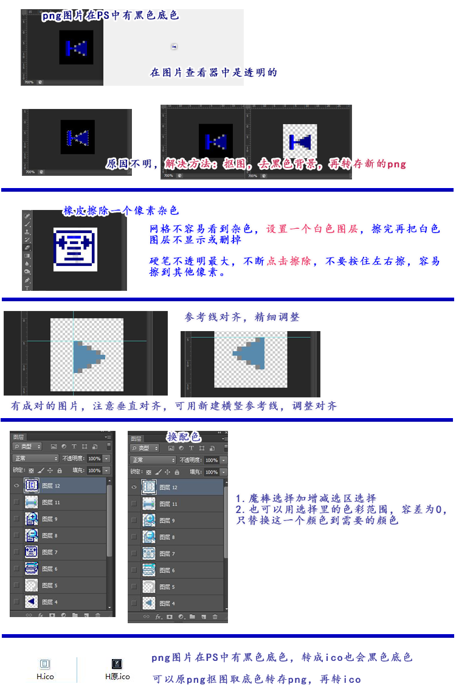

透明png图片在PS中显示黑色底色
过去经常遇到在PS中做出的png图片，在windows里用图片查看器查看有黑色底色，不过放到网页上可以正常使用，效果也是透明的，所以估计和图片查看其有关，而且有时候查看是黑色底色，有时候又正常了。但是最近遇到了另一种情况，原始png格式图片，在photoshop中加载，却有黑色的底色，上网查了查，发现有个人问过，但是最后也没解决，有人回复和图片模式有关，但是自己调试了下个各种模式，以及各种通道，加载到PS里还是黑色的背景。 但是在windows查看器查看是透明底色，还可以看到底面的格子。
现象如下：
1.把该png图片在PS中加载，有黑色背景。
2.该png图片在windows的一种图片查看器中查看是透明的。（用的2345看图王）
3.把该png图片转成ico图标格式，转成的ico图标格式在图片查看器中也是黑色背景的。
这个问题比较奇怪，后来网上也找不到解决办法，在PS试了试也没找到其他方法，所以只能用其他方法处理，由于这些是png格式的小图标，所以选择了抠图。
抠图抠成png的透明图，然后把png透明图转成ico格式。
抠图选区选择：
由于很小的图标，在PS中可放到700倍，或1000倍以上等都可以，然后进行选择，像素不是很多，选择方法大体两种。
1.用魔棒工具，对需要的地方进行选择，或反选，用魔棒的增减选区等，删除选区外的部分。
2.用选择里的色彩范围，色彩范围容差值调成最小，也就是只选一种颜色。
橡皮擦除一个像素杂色：
PS：但是实际测试后，虽然看上去删除了选区外的，还是会有杂色。
杂色在网格背景下不是很明显，可以设置一个白色图层，用来显示出来，最后再把白色 图层不显示。
杂色可以用橡皮擦除，橡皮需要调整成一个像素的大小，擦除时不能用普通的擦除方法，不能按住不同左右擦，因为很多时候只需要擦除一个像素，一左右就会不小心把其他像素擦掉。
橡皮硬度不透明度设置最大，不过测试即使硬度和不透明度为最大，不是柔笔笔刷，有时一个像素也要多擦几次，以后有机会再测试下什么原因。
多擦几次时，不能按住拖动左右擦，因为一个像素很容易擦到其他像素上，可以用点击代替摩擦，也就是选择一个像素的橡皮，然后一个像素，不同点击，直到消失。
图标新建参考线，标尺：
图标由于很小，一般也需要有标准，可以新建一些横竖参考线，对图标进行标尺，如果有成对的图标，确保垂直上下距离一致。
如果是平时作图不精细的，可以看着差不多就行，如果是图标等格式化的精细东西，则需要用参考线和标尺查看对齐和位置问题。
换配色：
换配色时，可以魔棒选择加增减选区选择，也可以用选择里的色彩范围，刚开始用选区，选区魔棒也是一个像素，因此需要增减等需要仔细操作，后来发现如果是单纯换一个图的某种颜色，用色彩范围最轻松，直接选中需要替换的颜色，容差为0，只替换这一个颜色到需要的颜色。
不过PS中，一旦用选择色彩范围选中了选区，前景色也会变成选中的颜色，而不是替换的颜色。
可以再对需要的颜色进行取色，取完再填充取后的前景色。
或者也可以把需要的颜色设置成背景色，填充背景色。
透明png图片进入PS中显示黑色背景问题的解决方法：
平时没有遇到过，目前没发现是什么原因导致的。
目前，可以的方法，就是重新抠图，把黑色背景去掉，可以选中图片内容，抠出来，也可以选中黑色背景部分，删除掉。
重新抠图后，再用PS转存成透明png图片。
转存后的png图片再次进入PS，或转成ico后，就没有黑色背景色了。
不过转存后的png图片用2345看图王查看，是透明的，放大显示加载中的时候是黑色的，放大加载完成，放大的图也是透明的。获取黑色背景和加载查看有关。
目前没发现原因，只能抠图，去黑色背景，再转存png方法解决。
透明图在windows查看器显示黑色背景的问题：
这个可能是图片查看器的的问题，放大或实际用到网页里，还是会是透明图。
有可能的情况：
有次选择的时候觉得可以再放大一点比较好，就放到了一个很大的数值，PS提示数值应在XXXX之间，然后出现了一个最大的放大值，放大只是利于查看编辑的，实际图片不会放大，保存之后，发现在windows查看器里有黑色底色。
后来的我还是用的放大700倍，或1000倍，小倍数，其他的都正常，在windows查看器里是透明的，只有那个放大到很多的那个保存的是黑色背景。
因为这属于查看器问题，时好时坏，可能也不是这个原因。
之后同样的图片，我放大700的情况下保存的 ，发现这个图是透明的。
有可能和编辑时候的倍数有关。不过windows查看器显示黑色背景的，并不影响使用，所以也不是特别在意这个。
图示：
